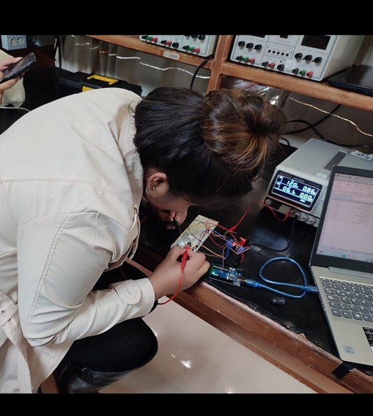

HOLA!!
🙋🏻♀️
SOY CARMEN HUITRÓN

Estudiante de Licenciatura en Ingeniería en Computación y cuento con sólidos conocimientos como técnico en Informática. Mi principal propósito en la vida es convertirme en una profesional destacada en el ámbito STEM, adquiriendo habilidades y conocimientos que me permitan sobresalir en áreas como la programación y la ciencia de datos.
Me motiva la posibilidad de participar en proyectos innovadores y colaborar con otros profesionales para materializar ideas creativas. Disfruto investigar y profundizar en temas desconocidos, siempre con la convicción de que cualquier desafío tiene una solución. Me apasiona asistir a conferencias, talleres y cursos que me permitan seguir aprendiendo y creciendo en mi campo de estudio. Anhelo no solo alcanzar el éxito personal, sino también apoyar a otras personas en la realización de sus sueños y metas, brindándoles orientación y recursos para alcanzar el éxito.DESARROLLO WEB
Durante mi experiencia en el dasarrollo web, es de constante adquicion tannto de conocimientos y habilidades técnicas y la mentalidad creativa necesarias para abordar los desafíos más complejos, emocionado por seguir creciendo y aprendiendo, y por contribuir al mundo digital con mucho compromiso y dedicación.
CURSOS
Mi participación activa en conferencias y cursos ha sido esencial para mi crecimiento y éxito profesional.
Estas experiencias continúan siendo una fuente de inspiración y motivación, impulsándome a alcanzar nuevos logros y contribuir de manera significativa al campo en el que me desempeño.Estudiante
Ha sido un período de aprendizaje constante, explorando diversas áreas del conocimiento en la universidad. Cada asignatura y proyecto ha contribuido a mi crecimiento académico y personal, preparándome para mi futuro profesional.
El curso de TecnolochicasPRO y mi experiencia universitaria han sido fundamentales en mi desarrollo. Estoy emocionada de aplicar estos conocimientos en mi carrera y contribuir al campo en el que me desempeño.
El Bootcamp de Tecnolochicas PRO nos dio la oportunidad de obtener bases sólidas en HTML y CSS para continuar con nuestra formación de desarrollador Frontend, así como mejorar la confianza en nuestras capacidades y hacer crecer nuestra red de contactos. En general me agrado mucho y agradezco la oportunidad de formar parte del proyecto.
Carmen Paola Aceves

Carmen Huitrón es una persona responsable , colaborativa y enfocada , la recomiendo ampliamente en la creación de sus proyectos .
Narely García

Tomé el curso de Desarrollo Web por Tecnolochicas y fue una experiencia excelente, el contenido del curso fue básico para introducirme más hacia el diseño web, la participación de la comunidad fue muy agradable, además, durante el curso las mentoras siempre dispuestas a ayudar y guiar. Recomiendo este curso a cualquiera que quiera adentrarse en el mundo del desarrollo web.
Monserrat García Núñez